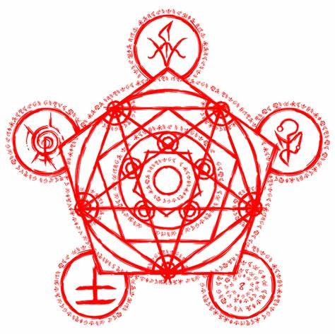

A Ordem Paranormal

A Ordem Paranormal é a primeira temporada da série de campanha de RPG
Ordem Paranormal, onde
temos um mistério involvendo o incêndio da escola de Ensino Médio Nostradamus com
origem desconhecida.
A série "A Ordem Paranormal" se passa em um universo onde existem duas dimensões: o Normal e
o Paranormal. O Normal é onde nós vivemos como humanos, enquanto o Paranormal é um lugar completamente
diferente, onde tudo que parece impossível pode se tornar real, o que normalmente estaria associado a
espíritos, demônios, entre outros tipos de anormalidades ligadas ao pós vida, por exemplo. Esses dois
locais são divididos por uma camada chamada de Membrana, que impede que o Normal e o Paranormal entrem
em contato. No entanto, essa Membrana pode se enfraquecer com o aumento do medo do sobrenatural, levando
monstros horrendos e muito perigosos a invadirem nossa realidade. Esse fenômeno geralmente ocorre em locais
bem específicos, propensos à percepção de medo, como hospitais abandonados, casas antigas e sanatórios
desativados.
Ao redor do mundo inteiro diversos grupos se formaram, buscando enfraquecer a Membrana o
máximo possível, a fim de destruí-la e levar à fusão das dimensões, com o objetivo de buscar seus
próprios desejos ou, quem sabe, cumprindo um propósito maior. Os membros desses grupos são chamados de
Ocultistas (nessa época, Esoterroristas).
Para impedir que o caos se instale, uma organização global secreta foi criada: a Ordo Realitas
("Ordem da Realidade", nessa época chamada de Ordo Veritatis, "Ordem da Verdade"). Pessoas comuns
que vivem vidas duplas para impedir os atos Ocultistas, que têm como objetivo o aumento do contato
entre a população com o paranormal, aumentando seu medo e, consequentemente, enfraquecendo a membrana
e permitindo a interferência do paranormal.
A história começa na madrugada do dia 29 de fevereiro de 2020, quando a vizinhança da Escola
Nostradamus ouviu um grito aterrorizante vindo de dentro do prédio, que horas antes havia sido consumido
pelas chamas de um incêndio de origem desconhecida. Isso leva a Ordo Realitas a convocar os membros
novatos Elizabeth Webber, Thiago Fritz e Daniel Hartmann para investigar o local do ocorrido, onde se
suspeita da presença de atividade paranormal. Logo, Alexsander Kothe se junta à equipe, primeiramente
apenas como um suspeito, pelo fato de ter relação com os membros ocultistas da escola. Porém, mais tarde
é descoberto que Alex é, na verdade, uma vítima de um ritual de apagar memória.
Episódios
| N° do Episódio | Título | Data da Estreia | Link | Duração |
|---|---|---|---|---|
| 1 | Episódio 1 | 29/02/2020 às 18:00 (Horário de Brasília) | Twitch Youtube |
06:29:36 |
| 2 | Episódio 2 | 07/03/2020 às 18:00 (Horário de Brasília) | Twitch Youtube Parte 1 Youtube Parte 2 |
07:58:53 |
| Resumo da Primeira Temporada | 30/10/2020 às 18:00 (Horário de Brasília) | Twitch |
03:56:39 | |
Personagens e Monstros da Temporada
Personagens
Ordo Realistas
-
Equipe sem nome
-
Daniel Hartmann
-
Elizabeth Webber
-
Thiago Fritz
-
-
Membros da Ordem
-
Senhor Veríssimo
Ocultistas
-
Álvaro Augusto
-
Matias Dennis
-
Olavo Costa
Escola Nostradamus de Ensino Médio
-
Agatha Volkomenn
-
Alexsander Kothe
-
Álvaro Augusto
-
Evelyn Orlando
-
Fernando Pinto
-
Gabriel Opspor
-
Gustavo
-
Julia Correa
-
Lina Kunsti
-
Matheus Geleerd
-
Matias Dennis
-
Olavo Costa
Monstros
-
Aberração de Carne
-
Degolificada
-
Zumbis de Sangue
Para ir para a página sobre os Elementos do Outro Lado clique no grande símbolo na tela
